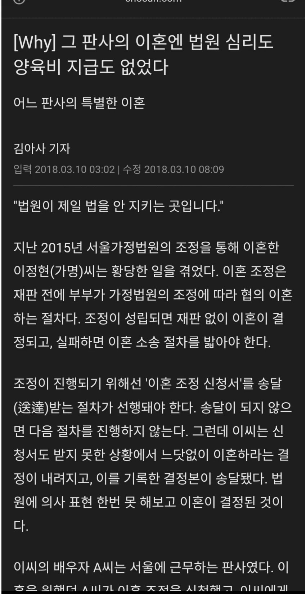

판사님이 양육비 지급을 왜함?ㅋㅋㅋㅋ

판사님이 양육비 지급을 왜함?ㅋㅋㅋㅋ
판사 배때지엔 칼이 안들어가나봄
석궁은 들어갈거라는 학계의 예상이 있었는데, 실험해보니 명중률이 낮았다던가...
공시송달한거 아니야?
이거 맞음. 예전에 어떤 범죄자가 판사의 전세금 먹튀했다가 법정 양형기준보다 더 크게 처벌 받았다고
다들 통쾌하다는 댓글들이었는데
그거 사실 그냥 권력 남용한 거임. 범죄임
누구보다 객관적으로 사건을 따지고 판단해야 할 놈들이
사사로운 감정에 이끌려 이리저리 좆대로 판결한다는 건,
법치주의 국가에서 매우 심각한 문제임
저런 판사들이 조두순보다 더 해악이라고 봄
인간 판사도 책임 안지는데 걍 AI로 바꾸자